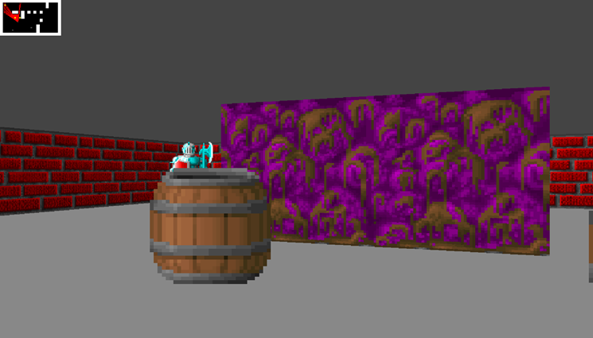

Hi I'm Hyunseop
A Game Developer
This is My Blog
About My Works
- Win32API Project
- Discord Bot Project
- Support Music Playing using FFMPEG
- Support Stock Market Price Check
- Support Traslation English To Korean, Japanese To Korean
- Support Weather News
- Support Birthday Notifications You have to Add your Birthday to 생일.csv file
- Basic RayCasting

About My Skill Sets
- Intermediate C++
- Basic Python
- Basic HTML
- Intermediate DirectX11